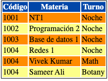

hacer que la tabla a continuación se vea como la imágen a continuación expone:

| Código | Materia | Turno |
|---|---|---|
| 1001 | NT1 | Noche |
| 1002 | Programación 2 | Noche |
| 1003 | Base de datos 1 | Noche |
| 1004 | Redes 1 | Noche |
| 1004 | Vivek Kumar | Math |
| 1004 | Sameer Ali | Botany |